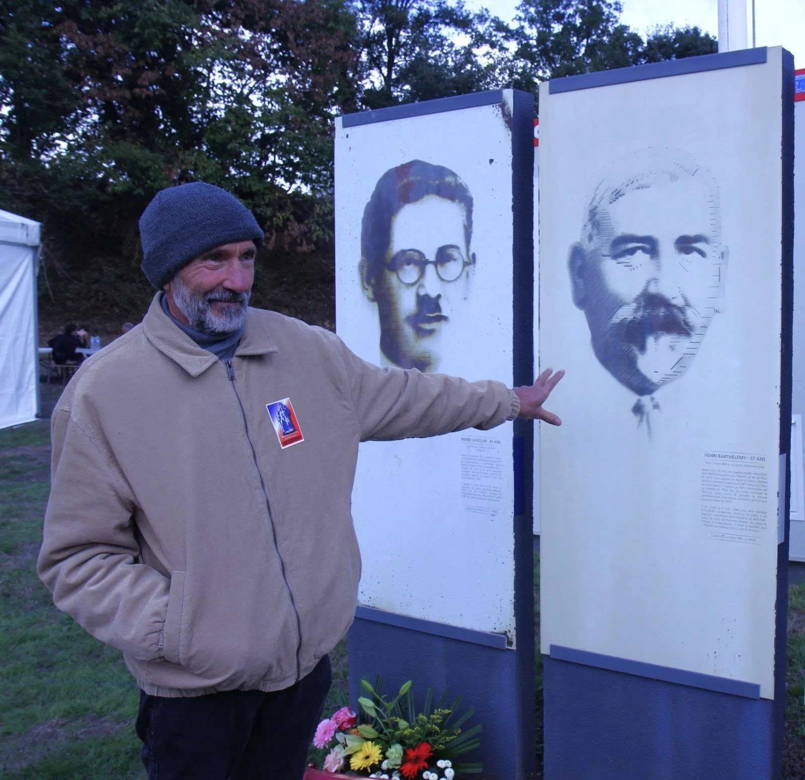
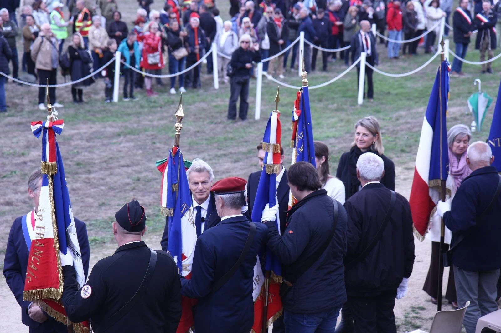
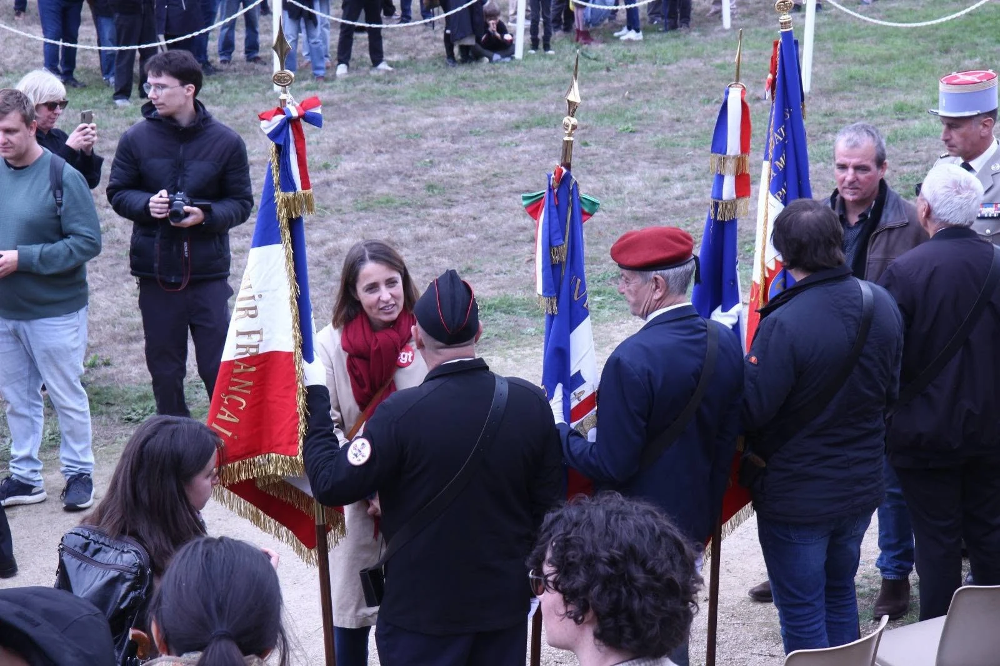
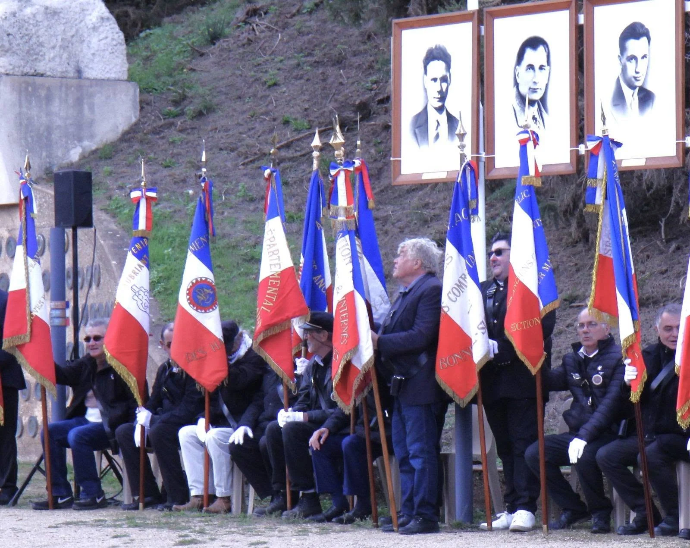
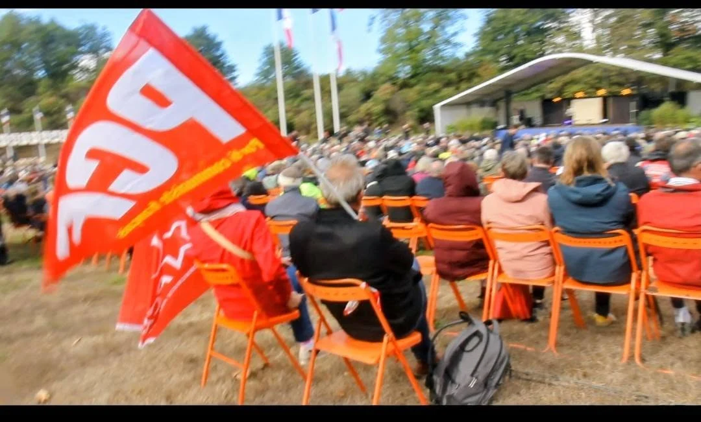

Publication du PCF 79
À Châteaubriant, nous avons rendu hommage à Henri Barthélémy et aux résistants fusillés
Date indiquée par Facebook · 19 octobre 2026
Légende originale du PCF 79
Des communistes des Deux-Sèvres se sont rendus à la Sablière de Chateaubriant ce 18 octobre pour commémorer le 85ème anniversaire de l’exécution des 27 héros résistants fusillés par les nazis.
Parmi ces héros figurait Henri Barthélémy, un Deux-Sévrien cheminot qui fut sous-chef de brigade au dépôt de Thouars ; militant syndicaliste et communiste, il fut élu conseiller municipal de cette même ville de Thouars.
Henri Barthélémy fut arrêté une première fois le 7 mars 1940 pour diffusion de l’Humanité clandestine et incarcéré à Poitiers d’où il fut libéré au début de l’occupation allemande, le 18 juillet. Arrêté à nouveau le 20 avril 1941 suite à une décision d’internement administratif prise à son encontre par le préfet, il fut interné à Châteaubriant. Et le 22 octobre 1941, il faisait partie des vingt-sept hommes qui ont été exécutés sur ordre des autorités d’occupation.
Fabien Roussel, secrétaire national du Parti communiste français, et Sophie Binet, secrétaire générale de la CGT, étaient présents. Une présence qui a du sens en ce lieu, tant les militants communistes et les syndicalistes étaient nombreux parmi les otages.
Repères éditoriaux
Le 18 octobre, nos camarades des Deux-Sèvres étaient à la Sablière pour le 85ᵉ anniversaire de l’exécution des 27 résistants. Nous avons rappelé le parcours d’Henri Barthélémy, cheminot, syndicaliste, communiste et élu à Thouars.





Sources
PCF 79 · relevé Meta et fil Facebook · FB-1443214787991770
À lire aussi · À Châteaubriant, « se souvenir, transmettre et agir »